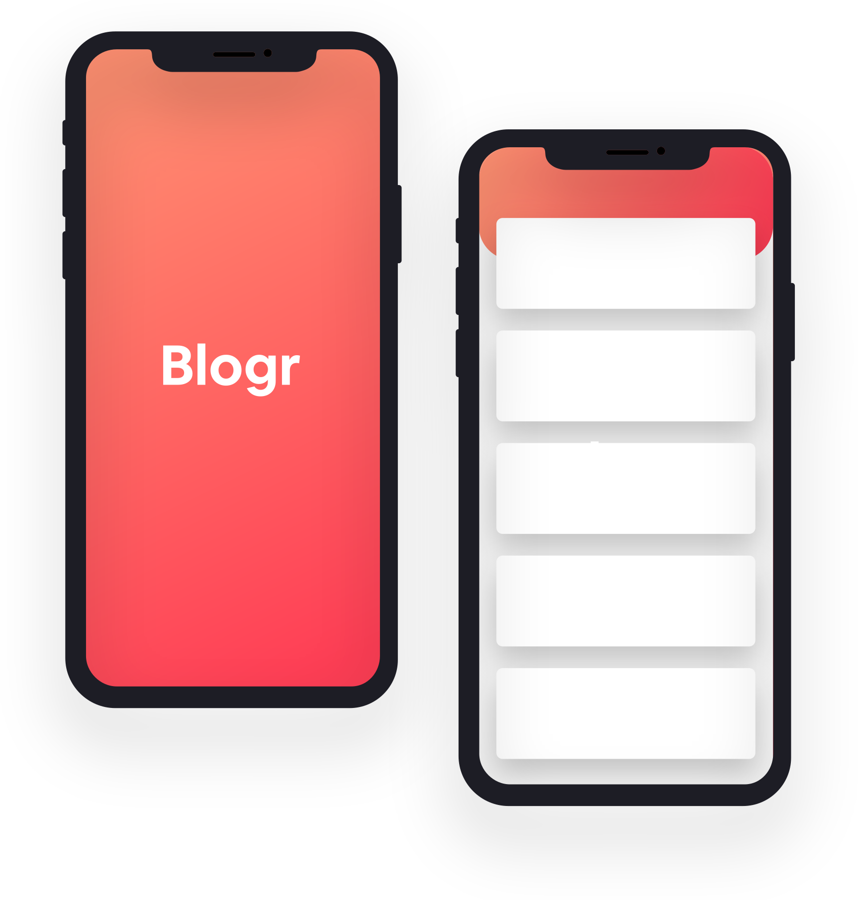

Grow your audience and build your online brand
Blogr features an exceedingly intuitive interface wich lets you focus on the thing: creating content. The editor supoprts management of multiple blogs and allow easy manipulation of embeds such as images, videos, and markdown. Extensibility with plugins and themes provide easy way to add funcionality or change the looks of a blog
With realiability speed in mind, worldwide data centers provide the backbone for ultra-fast conectivity. This ensures your site will load instantly, no matter where your readers are, keeping your site competitive Increase the usability of your blog by adding cutomized categories, sections, format, or flow. With this funcionality, you in full control

With realiability speed in mind, worldwide data centers provide the backbone for ultra-fast conectivity. This ensures your site will load instantly, no matter where your readers are, keeping your site competitive
Blogr is a free source application backend by a large community of helpful developers. Its supports features sush as code syntax highlighting, RSS feeds, social media integration, third-pary commenting tools, and worls seamlessly with Google Analitycs. The architecture es clean and is relatively easy to learn
Batteries includes. We build a simple and straightforward CLI tool that makes customization and deployment a breeze, but capable of producing even the most complicated sites.